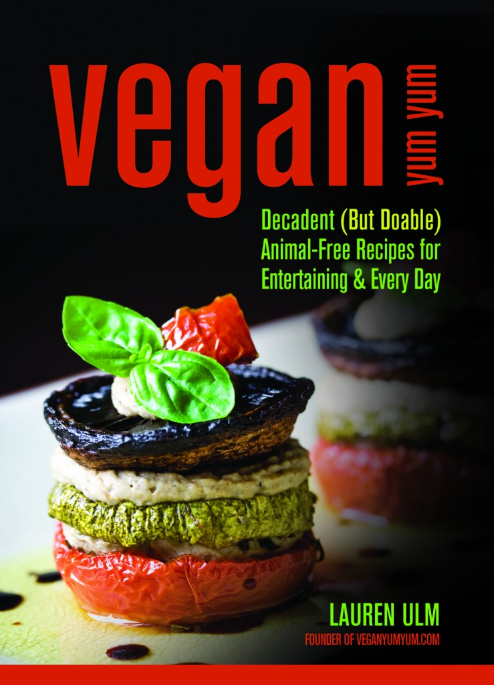

About

Hello! I’m Lolo. I’m 29 and I live in Boston.
I post on facebook. Sometimes I tweet. Photos of food, cats, and things completely unrelated to this blog are on instagram as user littleturkey.
A little while ago, I wrote a book:

If you have an iPhone, I have a free app that contains a few of my recipes.
If you like flickr, you can check my page out here. If you’re a knitter and on Ravelry, say hi to me here.
I do my best to make vegan food tasty and appealing to vegans and non-vegans alike.
Frequently Asked Questions
What kind of camera do you use?
I have gone through several cameras over the years, but my most current camera is the Canon 5D mark II. I like fast prime lenses.
Any photography tips?
In 2008 I wrote a post about food photography. Yes, it’s a few years old now, but I think it has some good ideas if you’re getting started with food photography.
Can I use your images on my blog/in my magazine/to advertise my product?
If you have a blog and you’re not selling anything, you’re free to repost my images as long as you link back to my blog and identify the photos as mine. You do not need to ask my permission to do this!
If you want to use my images for any other reason, contact me first. I generally do not allow my images to be used for commercial purposes, such as stock photography, or to advertise your company/product/whatever. I suppose there are exceptions to every rule, so if you’re really interested in them email me.
Press
A while ago I was a guest on the Martha Stewart Show! My hair was all short and everything. Weird! Here’s the clip:
If you have any questions, feel free to email me at lolo AT veganyumyum DOT com
Your Kitties are Adorable!
hi! love this site.. have you done or do you plan on doing anything low carb?
You are an inspiration. I am not a trained chef either, but my friends and neighbors all think I should either start my own line of homemade salad dressings or write a cookbook. I get a little scared because I do not have a background in it. But I am so happy to see you are so successful. Your work is beautiful, and I am going to forward your site to my vegan and vegetarian friends.
So, when is this cookbook going to be coming out? Because reading all these posts without the recipes is really killing me. Seriously. Everything is so gorgeous.
I love these! I am not vegan, but I am vegetarian, so it’s wonderful to be able to pour through a website with beautiful looking and delicious sounding food and know that it is all good for me to try!
Seriously, the presentation is amazing… I want to try everything! Hurry up on that cookbook so I can get it!
You are amazing. I found this blog through a cupcake blog, and I am so impressed. And very inspired to cook more vegan food! I cannot wait to buy your cookbook!
We do love you, and thanks so much for the link! But, one little correction – there is a “g” in SuperVegan.com. (We’re not saying what it stands for though!)
I just found your blog today and added the LJ feed to my friends list so I could keep up. I’ve recently started blogging too and admire your photography skills and recipe ideas! Can’t wait for the cookbook!
I am so happy that there will be a whole book. Which means I could order it online in my country too. Great. I hope you have great fun working on your book. It will definitely become a success!
I can’t believe I’ve never seen your website before! I’m in love. In LOVE, I tell you! I am going to buy your cookbook when it comes out, and copies for my mom and dad. So glad you exist!
I love this. I have been Vegan one year and I get a little dull sometimes.Thanks, I knew it was ways to get of the traditional way we grew up eating veg. I will buy that book as soon as it gets out.
What will be the name of your cookbook? I’ll watch for it. You’re a natural, good luck. b b
Hello! I just found this blog as well and wanted to say hi and you’re amazing!
Please. if you have a mailing list for this site add me to your list.
Thank you so much for all that you are doing.
Please open a vegan restaurant in Boston.
Also check out Kurukulla Center: http://www.kurukulla.org
I love your website, and cannot wait to get your cookbook and make absolutely every recipe in it.
Anyway, I have been searching for years for vegetarian marshmallows. They used to sell them in a specialty store near my house, but I think the manufacturer went out of business. No one seems to know… I’ve tried making homemade marshmallows, but using gelatin-substitute doesn’t allow them to gel the same. Marshmallows are the ONLY thing I miss about being vegetarian, and I though, if anyone knows where to get them/ how to make them, it would be you!!
Olá,
Eu passei aqui para conhecer seu blog. Seu site é literalmente muito delicioso!!
Parabens pela criatividade e empenho, principalmente não sendo uma pessoa do ramo de comida e de fotografia (o outro site do Flickr).
Até logo.
Hk
Your pictures and recipes are amazing. I’m not a vegan but I’m choosing healthier foods. I just need to learn how to prepare them. I’m looking forward to getting one of your cookbooks.
-Keisha
Can’t wait for the book! I stumbeld on this blog & just in time- i felt bad returning diet for a new america and mosseied on over only to find your blog!! Now, I’m heading home to fix me some fixins and sigining up for your wisdom!
As a fellow vegan-food-experimenter, I can’t help but idolize you/be in awe of your amazingness. I adore everything you do!! Your recipes and photos are just, flawless and classy. I can’t wait until your book comes out!
My goodness, you’re brilliant!
i love your website!
would i be able to add you to my fav links section? thanks!
Hey Lolo! The knit night’s were on Slashfood, too!
http://www.slashfood.com/2007/06/20/food-porn-knit-some-cupcakes/
You probably already knew; it was so long ago.
this is a great website! can’t wait for your book…i’m inspired by the fact that you’ve had no formal training–there’s hope for me yet!
Love your site! Everything looks so delicious!
I was curious about the recipes to all of these wonderful prepared goodies and all. I assume they will be apart of the cookbook which why they are not posted?
Thanks everyone! Your comments are all so sweet!
Patricia – If you don’t see a recipe posted, you’ll be able to find it in my cookbook in November!
Everything on this site is so brilliant and looks so delicious!
I’m really looking forward to buying your cookbook :-). Will it be available outside the US?
Hi Lauren! It was great to see you at the movies the other day! This blog is great! I’ll be coming back and trying your recipes for sure! Good luck with the cookbook! Molly
(wait! i didn’t realize that would be public. how to edit out personal info?)
I’m very glad I found your blog! I did a review of it on my own
http://24hourkitchen.wordpress.com/2007/08/13/vegan-yum-yum-not-just-any-food-blog/
I can’t wait to try mini donuts for my kids!
And I’ll be checking back for cookbook updates because I know I’ll be ordering one!!
can’t wait for the cookbook, hope it will be sold elsewear besides amazon.com as i don’t care for amazon.com, too mamoth and not great customer service
Hey Lola,
I saw your website for the first time today, but your recipes really appeal to me! Cooking is one of my favorite hobbies too, and I started my weblog a few weeks ago. Ever since I was inspired by all the good dishes I could find on the Internet.
My site is in Dutch, but I will post in English in the future!
Good luck with your cookbook, I am looking forward to it!
Your website address was in today’s edition of the Sacramento Bee. I decided to check it out since I’m lacto-vegetarian and been thinking about going vegan – I’m in love! Thanks for your website. It’s awesome!
hi, I’m from Italy, your blog it’s FANTASTIC, my compliments!
Would really like to have recipes. Photos are fantasic. How can I get the recipes? It’s great to post photos but should have recipes with them as well.
thanks you for sharing.
Your recipes and photos are just amazing! I love sites that show vegan food can be inventive & delicious & cruelty free all at the same time.
Greetings and best wishes from downunder!
I just experimented with beets for my very first time– canned beets had me scared for years. 1. Preheat your oven to 425. 2. Get fresh, organic ones. 3. Quarter them (or cut them into eighths if they’re big). You can cut off any bad spots or peel them if you wish. 4. Lay them in a pan. 5. Add a clove (or two) of freshly-crushed garlic, salt & pepper. 6. Toss it all in a bit of drizzled oil. 7. Cover in foil. 8. Bake for 10 minutes. 9. Bake for another 7-10 minutes uncovered until a bit dried. Voila. They’re great hot and just fine cold as well. Lolo, you have to try this and see what you think. They’re quite photogenic as well. (Save the greens– they can be used in any recipe that calls for kale).
I got here after following a link for the delightful knitted cupcakes and I just wanted to say that your site is gorgeous.
Love the site. saw your knitting cupcakes on one of the knitting blogs i frequent. cant wait to try all the new things i found. excellent job!
Hello!
I just wanted to drop a note to say I’ve enjoyed your blog and it inspired me to start my own at http://frogfood.peace.net
One problem I am having is getting decent photos. I have dozens of pictures of delicious food that just don’t look good enough to post. And as you can see, even the ones I have aren’t fabulous. I have a decent camera, but it seems to fail miserably anytime the flash is needed. Can you tell me something about your photo set-up and how you get such gorgeous pictures? Thanks. :)
Hello-
I am with my company this week at Natural Products Expo sampling our imported vegan cheese from Scotland called Sheese. Several folks asked me if I had heard of this blog and or you had heard about Sheese for your recipes.
I spent this morning before the show looking over the delicious recipes, so thanks very much for all your hard work.
We’ve been getting some good reviews about Sheese, so if you’d like to try some in your recipes, we’d be gald to send you a sample pack.
Regards,
Scott Myers
Hello!
I just found this site looking for info about baby squash. I came home from vons were i bought some squash put it in the oven and then put some butter and honey on it but my kids did not like it so i am lost once again. I am thinking of stopping eating meat but i am confused about how to go about it whats good for me and whats not . So any info that anyone have and can help me i would love that, i hate cookbooks because it is always so hard to find all the thing that are in them so i always give up, i got this really good book for kids and it always asked for light brown self rising flour and i could never find it so i gave up once again. so please help me i need some more healty ideas. thank you
Hello! I stumbled on to your web site tonight and I’m hooked! I’ve bookmarked your site and I intend to refer to it often. The pix of your food are beautiful. Many Thanks!
Do you ever do anything gluten free? I have celiac disease and most of the packaged mixes you can buy for baked goods are downright digusting. I also love to bake and am used to home-made items. I was one of the few kids in this world that didn’t like Twinkies and things like that growing up. I made a batch of cupcakes using a mix a while back and after eating a half of one I tossed the entire batch in the trash. If you could create tasty gluten-free bakery items there are thousands of us celiacs that would be eternally grateful.
thanks
Hello, I was wondering how you felt about apricots. They’re my favorite fruit and I don’t know how to use them. I eat them and make them into a sauce. Other than being a great face scrub what else can they do? If you have any ideas e-mail me or post something lovely here.
Oh can you kind of explain what earth balance is. I’ve googled it and received missed messages.
P.S. Since you live in Boston too have you ever eaten cranberries and sliced apricots with a little sugar? Try it. It’s weird but the second time you try it you might just love it.
Could I please have the recipe for the Tomato Mushroom Risotto and Roasted Eggplant. Please i am desperate for this recipe as it is exactly the one i am looking for.